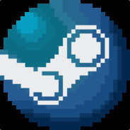

Hobbies
- PC gaming
Uno de mis hobbies favoritos es jugar PC, lo cual hago desde aproximadamente los 13 años, aunque en algunas
oportunidades he dejado de hacerlo ya sea por tiempo o por interesarme momentaneamente en otra cosa como el deporte, siempre vuelvo a los videojuegos para compartir con amigos.Irónicamente ahora que después de años pude armar
mi computador, ya no tengo tanto tiempo para utilizarlo.

- Pesca
Otro de mis hobbies y uno muy presente en mi vida es la pesca debido a la influencia de mi Papá
que desde que prácticamente tengo memoria estuvo exponiendome a los ríos y lagos acompañado de una caña. Lo que
con el pasar del tiempo convergió en mi amor por los paisajes con cuerpos fluviales y llenos de naturaleza.
Experiencia
- 2022 Coordinador General de CPU
Me desempeño tomando decisiones y supervisando el funcionamiento de una iniciativa estudiantil de ingeniería
de la
cual formo parte desde 2018.
En la cual como técnicos restauramos computadores para posteriormente donarlos a personas en necesidad con
el
objetivo de reducir la brecha digital mientras también disminuímos la basura electrónica.
- 2022 Coordinador campaña Reutiliza para Ingeniería Sin Fronteras
Actualmente me encuentro coordinando la campaña Reutiliza de Ingeniería Sin Fronteras que se encuentra
trabajando
con Entel.
Me encargo de organizar las jornadas de refacción y de asistir en el diagnóstico de equipos para poder hacer
una
restauración rápida y segura.
- 2022 Ayudante curso ING2030, Investigación, innovación y Emprendimiento
- Soy actual profesor asistente del curso ING2030 donde se insta a buscar una problemática real en torno a un
tema
entregado, al cual se le pueda desdarrollar una solución tecnológica que pueda ser prototipada y finalmente
se pueda
crear un emprendimiento al respecto.
- 2021 Proyecto de Consultoría para la cooperativa Banca.me startup.
- Nos encargamos de hacer un informe financiero del status quo de la competencia en torno a las colocaciones
que
tenían vigentes.
The end, thanks for playing